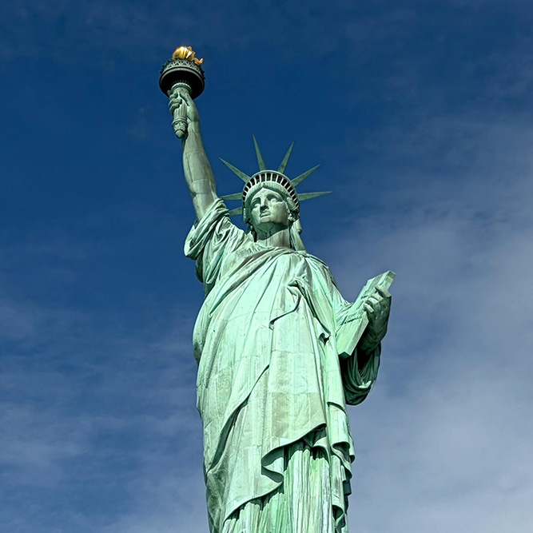

Statue of Liberty
The Statue of Liberty stands in New York Harbor as an enduring symbol of freedom and friendship between nations.

About
Built: Built in France and dedicated in 1886, the statue was presented as a gift from the people of France to the United States. It was designed by Frédéric Auguste Bartholdi and engineered in part by Gustave Eiffel, then shipped in sections and re-assembled on what is now Liberty Island.
Today: Over time it became a meaningful landmark for both Americans and immigrants entering America through nearby Ellis Island. Today its location is a national park and it is open to a limited number of visitors. While immigrants no longer enter through Ellis Island, it remains a landmark and symbol of the United States.
